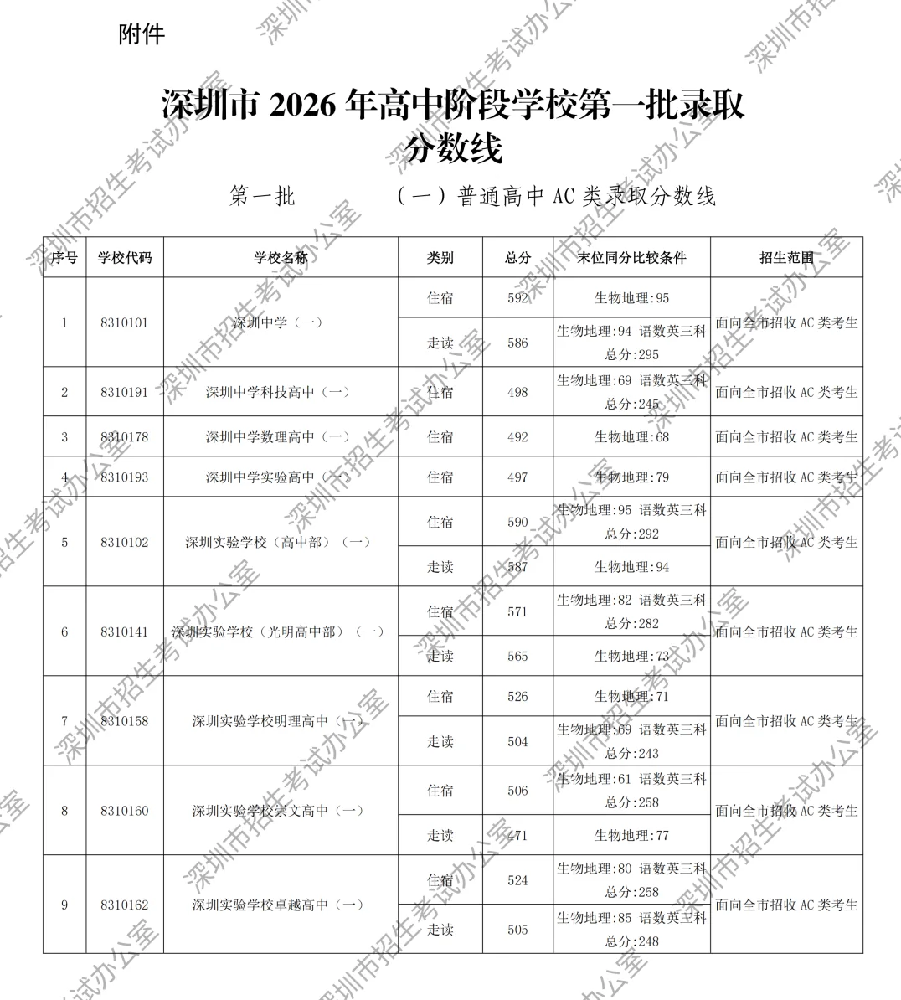
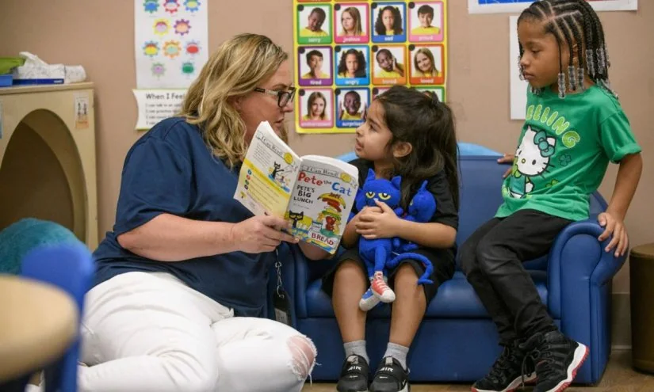
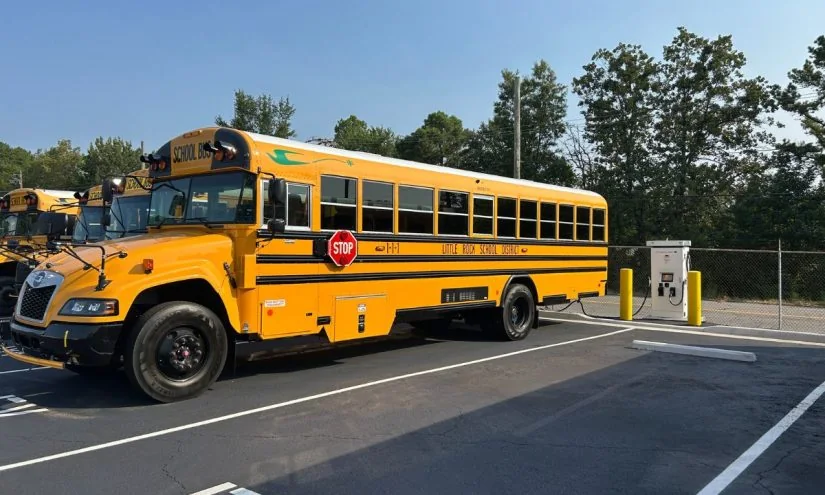

01
青岛7所学校发布学位预警：家长该如何应对？
青岛日报报道，青岛7所学校实施学位预警。这意味着什么？对家长和孩子有什么影响？
根据青岛日报的消息，青岛市有7所学校发布了学位预警。简单来说，就是这些学校的入学名额已经饱和，未来可能会限制招生人数或者提高入学门槛。学位预警通常出现在人口流入大、教育资源相对集中的城市。对于家长而言，这直接关系到孩子能否顺利进入心仪的学校。预警背后是教育资源供需矛盾的体现：好学校就那么几所，但适龄儿童却在增加。这会导致两种结果：一是部分学生被调剂到其他学校，二是学区房价格可能进一步波动。需要注意的是，预警并不等于“没学上”，而是提醒家长提前规划。
学位预警的机制通常是教育部门根据户籍适龄儿童数量和学校承载能力进行测算，当报名人数超过计划招生人数时，就会发布预警。预警等级可能分为红色、橙色等，不同等级对应不同的应对措施，比如限制落户时间、要求房产证持有年限等。对于家长来说，最直接的影响是孩子可能无法进入最近的学校，需要被调剂到更远的学校，或者需要提前满足更严格的入学条件。
从长期来看，学位预警反映了城市教育资源配置的不均衡。热门学校往往集中在老城区或优质学区，而新城区或偏远地区的学校则相对冷门。这种不均衡会加剧家长的焦虑，促使他们不惜代价购买学区房，进一步推高房价。但事实上，很多非预警学校同样有优秀的师资和特色课程，只是知名度不高。
对于普通家庭，我的建议是：第一，及时关注当地教育部门的官方通知，了解预警学校的范围和应对政策。第二，不要把所有希望都寄托在一所学校上，提前了解周边其他学校的办学质量和特色，做好备选方案。第三，如果条件允许，可以考虑民办学校或国际学校，但要注意费用和距离。第四，最重要的是，不要因为学位预警而过度焦虑，孩子的成长环境不仅仅取决于学校，家庭教育和社区环境同样重要。
伊恩的观察
如果你家正好在这些预警学校的学区，建议提前了解当地教育部门的调剂政策，同时考虑备选学校。不要只盯着热门校，关注学校的特色和孩子的匹配度更重要。
02
深圳中学录取线592分：高分背后的教育焦虑
深圳2026年高中首批录取标准公布，深圳中学达到592分，两校突破590分。这个分数意味着什么？

图片来源：finance.sina.com.cn ·
查看原图深圳中学的录取线达到了相关数量分，这个数字接近满分。这反映出深圳作为一线城市，优质高中资源的竞争已经到了白热化程度。高分线的背后，是家长和学生对名校的追逐，以及教育内卷的现实。但我们也需要理性看待：录取线高并不代表学校就一定适合每个孩子。高分学生集中在一起，学习压力也会更大。此外，深圳还有其他优质高中，分数线稍低但同样有特色。对于家长来说，不要被高分吓到，而是要根据孩子的实际水平和兴趣选择合适的学校。
深圳中学录取线如此之高，背后有多重原因。首先，深圳中学作为深圳最顶尖的高中之一，其升学率、师资力量和校园文化都备受认可，吸引了全市最优秀的学生报考。其次，深圳近年来人口持续流入，适龄学生数量增加，而优质高中学位增长相对缓慢，导致竞争加剧。第三，家长和社会的“名校情结”进一步推高了分数线，许多家庭从小学甚至幼儿园就开始为中考做准备。
这种高分现象对普通家庭的影响是深远的。一方面，它加剧了教育焦虑，让家长和孩子感到压力巨大。另一方面，它可能导致教育资源进一步集中，形成“强者恒强”的局面。但我们也应该看到，并非所有孩子都适合深圳中学这样的高压环境。有些孩子可能在普通学校中更能发挥潜力，获得更多关注和机会。
对于家长，我的建议是：第一，理性看待录取线，不要将其作为衡量孩子成功的唯一标准。第二，深入了解各高中的办学特色，比如有的学校注重科技创新，有的注重艺术体育，有的注重国际教育。第三，与孩子充分沟通，尊重他们的意愿和兴趣。第四，如果孩子成绩与目标学校有差距，可以考虑特长招生或自主招生等途径。第五，最重要的是，保持平和心态，中考只是人生中的一个节点，不是终点。
伊恩的观察
录取线只是参考，不是唯一标准。建议家长和孩子一起分析各校的办学特色、课程设置和升学路径，找到最适合的，而不是分数最高的。
03
湖北2026年本科投档线分析：哪些学校是赢家？
新浪财经盘点了湖北2026年本科普通批投档最低分，揭示了高校录取的新格局。
湖北的本科投档线数据出炉，一些学校成为“赢家”。所谓赢家，通常是指投档线提升明显的学校，这可能得益于学校实力提升、地理位置优势或专业热度上升。对于考生和家长来说，投档线是志愿填报的重要参考，但也要注意：投档线每年都会波动，不能简单用今年的分数去套去年的位次。更重要的是，投档线只代表最低录取分，热门专业的实际录取分往往更高。此外，一些非省会城市的学校可能因为性价比高而受到关注。
从湖北的投档线数据来看，一些传统强校如武汉大学、华中科技大学等依然保持高位，但也有一些地方院校或行业特色院校的投档线出现明显上涨。例如，某些位于宜昌、襄阳等非省会城市的学校，因为当地经济发展和产业需求，相关专业热度上升，带动了整体投档线。此外，一些“双一流”建设高校的投档线普遍较高，但部分非“双一流”高校的特色专业也吸引了大量考生。
投档线的变化对考生和家长的影响是直接的。高分考生可能更倾向于选择热门学校和专业，但也要考虑专业前景和个人兴趣。中等分数段的考生则需要更加谨慎，避免扎堆填报导致滑档。低分考生则可以考虑一些冷门但就业前景不错的专业，或者选择偏远地区的学校。
对于即将填报志愿的考生和家长，我的建议是：第一，不要只看一年的投档线，要参考近三年的位次数据，因为每年的试卷难度和考生人数不同，位次比分数更稳定。第二，了解学校的专业实力和就业情况，不要只看学校名气。第三，合理设置志愿梯度，冲、稳、保相结合。第四，关注招生章程中的特殊要求，比如身体条件、单科成绩等。第五，如果对专业不确定，可以选择大类招生的学校，给自己更多探索时间。
伊恩的观察
填报志愿时，建议参考近三年的位次而非绝对分数。同时，不要只看学校名气，专业选择同样关键。可以结合职业规划，选择有发展潜力的专业。
04
美国Head Start项目面临威胁：低收入家庭儿童早期教育何去何从？
The 74报道，Head Start项目因政治动荡面临关闭风险，影响加州家庭。这个项目是什么？为什么重要？

Head Start是美国联邦政府为低收入家庭儿童提供的免费早期教育项目，自1965年启动以来一直得到两党支持。但近期由于特朗普政府的政策变动，包括资金冻结、联邦机构裁员等，项目面临中断甚至关闭的风险。加州作为移民大州，受影响尤为严重。早期教育对儿童的发展至关重要，尤其是对低收入家庭的孩子，它不仅能提供学习机会，还能减轻家庭负担。如果项目关闭，许多家庭将不得不寻找替代方案，而私立早教机构费用高昂，可能让这些家庭雪上加霜。
Head Start项目的历史可以追溯到1965年，作为“向贫困宣战”的一部分，旨在为低收入家庭的3-5岁儿童提供学前教育、营养和健康服务。项目覆盖全美，每年服务约100万儿童。研究表明，参加Head Start的儿童在认知发展、社交能力和健康方面都有显著改善，长期来看还能提高高中毕业率和大学入学率。
然而，近年来Head Start面临多重威胁。2025年，特朗普政府冻结了部分联邦资金，导致一些项目暂停运营。随后，联邦机构裁员影响了项目的监管和支持。此外，政府试图将移民儿童排除在项目之外，引发了法律诉讼。支持者通过诉讼和公众呼吁，暂时阻止了最坏的情况，但项目仍处于不稳定状态。
对于依赖Head Start的家庭来说，项目关闭意味着他们需要寻找其他早教选择。私立早教机构每月费用可能高达数千美元，对低收入家庭来说难以承受。一些家庭可能不得不让父母一方辞职在家照顾孩子，进一步减少家庭收入。此外，儿童失去早期教育机会，可能影响他们的长期发展。
对于关注早期教育的读者，我的建议是：第一，如果你在美国且依赖Head Start，可以联系当地项目办公室了解最新情况，同时加入家长支持组织，共同发声。第二，关注社区资源，比如图书馆、社区中心提供的免费早教活动。第三，考虑申请其他政府资助项目，如儿童保育补贴。第四，联系州议员或联邦议员，表达对Head Start的支持。第五，对于国内读者，可以关注我国的普惠性学前教育政策，比如各地正在推进的“学前教育三年行动计划”，了解如何为孩子争取优质早教资源。
伊恩的观察
早期教育是打破贫困代际循环的关键。如果你在美国且依赖Head Start，建议关注当地社区组织的支持资源，同时联系议员表达诉求。在国内，我们也应重视普惠性学前教育，避免类似危机。
05
柴油价格飙升，阿肯色州学区用电动校车省下大笔开支
The 74报道，阿肯色州一个学区通过电动校车，在柴油价格翻倍的情况下节省了预算。这对其他学区有何启示？

五年前柴油均价约每加仑2.68美元，今年春季已超过5.50美元。对于学区来说，燃油成本是预算的大头。阿肯色州小石城的学区率先引入电动校车，不仅降低了燃料费用，还减少了维护成本，同时保护了环境。这一案例表明，电动校车不仅是一种环保选择，更是应对能源价格波动的经济手段。当然，电动校车的初始采购成本较高，但长期来看，节省的燃料和维护费用可以抵消这部分投入。联邦和州政府的补贴也能减轻学区的负担。
小石城学区在2023年引进了首批电动校车，每辆成本约35万美元，而传统柴油校车约12万美元。但电动校车每英里燃料成本仅为柴油车的三分之一，而且维护成本更低，因为电动发动机结构简单，不需要更换机油、火花塞等。学区还利用联邦“清洁校车计划”的补贴，每辆电动校车可获得约20万美元的补助，大大降低了初始投入。
电动校车的运营效果显著。学区报告称，每辆电动校车每年可节省约1.5万美元的燃料和维护费用。按10年使用寿命计算，每辆车可节省15万美元，加上补贴，总成本已经低于柴油车。此外，电动校车零排放，减少了空气污染，对学生的健康也有好处。
对于其他学区来说，小石城的经验具有借鉴意义。首先，电动校车适合短途、固定路线的运营，因为续航里程通常在100-150英里之间，足以满足大多数校车需求。其次，学区需要建设充电基础设施，这需要前期投资，但可以通过政府补贴和长期节省来回收。第三，电动校车在寒冷天气下续航会下降，但在阿肯色州这样的温暖地区影响不大。
对于家长和社区成员，我的建议是：第一，了解学区是否正在考虑电动校车，可以参加学校董事会会议表达支持。第二，关注联邦和州的清洁校车补贴政策，推动学区申请。第三，如果学区已经引入电动校车，可以了解其运营情况，并鼓励更多学校跟进。第四，对于国内读者，我国也在推广新能源校车，可以关注当地教育部门的规划，支持绿色出行。
伊恩的观察
对于学区管理者，建议评估电动校车的全生命周期成本，并积极申请政府补贴。对于家长，可以关注学区是否推进此类项目，并支持可持续的交通方式。
无障碍文字记录
伊恩 你好，欢迎来到「伊恩每日·教育」。今天是2026年7月27日。最近，很多家长和学生在后台问我：升学季的新闻一条比一条吓人，到底该怎么看？今天，我们就从五条看似不相关的新闻出发，聊聊2026年升学季的冰与火。
伊恩 今天青岛日报报道，青岛7所学校发布了学位预警。这不是说学校要关门，而是指这些学校的入学名额可能不够用，户籍或房产年限不够的孩子会被分流到其他学校。学位预警通常针对小学一年级和初中一年级的新生，影响最大的是计划购买学区房或迁户口的家庭。
学位预警的机制很简单：学校招生计划固定，但片区内适龄儿童数量超过计划，于是按落户时间、房产年限等条件排序，靠后的孩子无法入学。青岛这7所学校集中在市南、市北等热点区域，往年也出现过类似情况。
对普通家庭来说，代价是时间成本和心理焦虑。你可能提前几年买了学区房，结果发现落户年限不够；或者孩子明年入学，现在才开始关注政策，可能已经晚了。误区是：很多人以为学位预警等于没学上，其实教育局会安排分流到周边有空余学位的学校，但可能离家远、质量不如预期。另一种误区是盲目追高，只看预警学校，忽略其他选择。
我的判断是：学位预警是教育资源不均衡的信号。热点学校集中了优质师资和设施，家长用脚投票，导致供需失衡。长期看，需要集团化办学、新建学校来稀释热度。短期对个人，行动分三步：第一，核实目标学校预警要求——登录青岛市教育局官网或各区教体局公众号，查清落户年限、房产证取得时间等具体条件。第二，准备备选方案——关注周边非预警学校，或了解分流政策，比如哪些学校接收分流生。第三，如果孩子明年入学，现在就要行动，别等到明年三四月报名时才慌。
最后，学位预警不是世界末日。它提醒我们：教育选择需要提前规划，但不必被一所学校绑架。孩子的成长，家庭环境和学习习惯比校名更重要。
听众 伊恩，我孩子明年上小学，现在买学区房还来得及吗？会不会买了也上不了？
伊恩 这个问题很现实。学位预警通常是提前一年发布，所以你现在行动，理论上还有机会。但关键看两点：一是落户年限要求，很多热门学校要求落户满2-3年；二是预警学校的入学顺位，通常优先“人户一致”且年限长的。如果年限不够，即使买了房也可能被调剂。建议你：先打电话给区教育局，问清预警学校的具体政策；同时考察两三所非预警但口碑不错的学校作为保底。记住，教育不是赌注，确定性比名校标签更重要。
伊恩 今天我们来聊聊深圳2026年高中录取分数线。7月27日，深圳公布了首批高中录取标准，深圳中学录取线达到592分，另一所学校也突破了590分。深圳中考总分是610分，592分意味着只扣了18分，这个数字确实让人倒吸一口凉气。
先看事实：深圳中学592分，是全市最高；另一所突破590分的是深圳实验学校（高中部），590分。两校分数均比去年有所上涨。深圳中考采用“分数+等级”模式，总分610分，包括语文、数学、英语、物理、化学、历史、道德与法治、体育等科目。录取时，除了总分，还会参考综合素质评价等级。
谁受影响？最直接的是深圳初三毕业生和家长。今年深圳中考考生约13万人，普通高中招生计划约9万个，其中公办普高约6.5万个。592分的深圳中学录取线，意味着只有全市排名前几百名的学生才有机会。对于全国关注中考的家庭，这个数字也传递了一个信号：优质高中的竞争依然激烈。
这个分数背后是什么机制？录取线不是学校划定的，而是由最后一名被录取考生的分数决定的。也就是说，592分是今年被深圳中学录取的考生中最低的那个分数。高分线的出现，一方面反映了顶尖学生的整体水平在提升，另一方面也拉高了竞争的天花板。但不必恐慌，因为录取看的是位次，而不是绝对分数。深圳中学的录取位次通常稳定在全市前0.5%左右，今年大概在650名以内。
普通学生和家长容易陷入一个误区：被分数线吓到，觉得“差这么多，没希望了”。其实，分数线只是针对最顶尖的那一小部分人。对于大多数学生来说，更重要的是找到与自己排名匹配的学校。深圳的高中录取分为多个批次，除了深中、深实验，还有红岭、宝中、深高级等一批优质学校，录取线在560-580分之间，覆盖了更广的学生群体。
那具体怎么做？第一步，拿到一分一段表，找到自己的全市排名。第二步，对比往年各校的录取位次，而不是分数。因为每年题目难度不同，分数会波动，但位次相对稳定。第三步，合理设置梯度志愿：冲一冲（位次略高于自己的学校）、稳一稳（位次匹配的学校）、保一保（位次明显低于自己的学校）。
长期来看，中考只是人生中的一个节点。深圳中学的592分，代表的是少数人的赛道。对于绝大多数学生，找到适合自己的学校，保持学习的热情和习惯，远比挤进一个高分圈子更重要。教育公平不是说每个人都上深中，而是每个人都有机会在适合自己的环境里成长。
最后提醒：分数线公布后，各校会陆续发布录取短信，请保持手机畅通。如果未被第一批录取，还有第二批、第三批以及补录机会。不要因为一次考试否定自己，人生的路还很长。
伊恩 今天我们来聊聊湖北2026年本科普通批投档最低分。新浪财经盘点了一些“赢家”学校，但我想和你一起拆解一下：这个分数到底意味着什么？谁真正受影响？以及我们该怎么用这个信息，而不是被它牵着走。
先看事实：湖北省教育考试院公布了2026年本科普通批各院校的投档最低分。所谓投档最低分，就是某所高校在湖北录取的最后一名考生的分数。比如，武汉大学可能投档线是620分，意味着只有620分及以上的考生档案才会被投给武大。但注意，投档线不等于录取线——投档后还有专业分配，如果分数刚压线，很可能被调剂到冷门专业。
谁受影响？最直接的是湖北的18万高考生和他们的家庭。但更深层的影响，是那些在“冲稳保”策略中挣扎的考生——分数卡在批次线附近，或者想用低分搏名校的人。还有那些被“赢家”二字吸引，误以为投档线低就是“捡漏”的家长。
那么，投档线低就一定差吗？不一定。比如，今年湖北某农林院校投档线只有480分，但它的动物医学专业就业率超过95%，毕业生起薪不低。而某热门财经院校投档线高达590分，但金融专业毕业生竞争激烈，部分人甚至找不到对口工作。所以，投档线只是“门槛”，不是“价值标尺”。
那怎么用这个信息？我给你三个具体方法：
第一，用“线差法”对比往年。你的分数减去批次线，得到一个差值。比如今年本科线是420分，你考了500分，线差80分。然后看往年学校投档线的线差——如果某校往年线差稳定在70-85分，那你可以冲一冲。如果线差波动大，比如从50分跳到90分，就要谨慎。
第二，看专业录取分，而不是学校最低分。很多学校官网会公布各专业录取分。比如，湖北大学计算机专业去年录取分比学校投档线高15分，而材料专业只高2分。如果你对专业有偏好，一定要查专业分，否则可能被调剂到不喜欢的专业。
第三，关注“大小年”现象。有些学校去年投档线奇高，今年可能回落；反之亦然。比如，某校去年投档线580分，今年可能降到560分。如果你能判断大小年，就有机会“低分高就”。但注意：这需要分析至少3年数据，不能只看一年。
最后，我想说：投档线只是起点，不是终点。教育的长期价值，在于你学到的能力和思维，而不是你进校门时的分数。所以，别被“赢家”榜单绑架，也别因为投档线低就轻视一所学校。真正聪明的选择，是找到适合你的专业和成长路径。
希望这些方法能帮你少一点焦虑，多一点从容。我们明天见。
听众 伊恩，高考志愿到底该选学校还是选专业？投档线高的学校就一定好吗？
伊恩 这个问题没有标准答案，但有一个原则：如果你有明确的职业方向，优先选专业实力强的学校，哪怕学校排名稍低；如果还没想好，优先选综合性大学，方便转专业或辅修。投档线高只能说明该学校今年热门，不代表教学质量一定好。比如某些行业特色院校，投档线可能不高，但毕业生在行业内认可度很高。我的建议是：花一周时间，列出你感兴趣的专业，查它们在全国的学科评估结果，再结合分数线做决策。
伊恩 今天我们来聊聊美国一个重要的早期教育项目——Head Start。这个项目自1965年启动，为低收入家庭的0-5岁儿童提供免费的学前教育、健康检查和营养支持。60年来，它跨越了11任总统，一直得到两党支持，但最近却面临严峻挑战。
根据The 74的报道，特朗普第二任期以来，Head Start遭遇了资金冻结、联邦机构裁员，甚至一度面临政府停摆的威胁。一些项目被迫关闭或缩减服务，移民家庭的孩子可能被排除在外。支持者发起了诉讼，法院也发布了初步禁令，但不确定性仍在持续。
谁受影响？最直接的是加州等地的低收入家庭。加州是全美Head Start服务人数最多的州之一，许多家庭依赖这个项目来获得免费的早期教育和照护。如果项目萎缩，这些家庭要么支付高昂的私立幼儿园费用，要么让孩子失去关键的早期发展机会。
利弊与误区：早期教育是教育公平的起点。研究表明，高质量的早教能显著提高儿童的语言、认知和社交能力，尤其对贫困家庭的孩子影响深远。Head Start一旦削弱，贫富差距将从幼儿园开始拉大。误区在于，有人可能认为这只是美国政治博弈，与己无关。但它提醒我们：任何国家的教育公平都需要制度保障，政策波动会直接冲击最脆弱的群体。
分层可执行方法：如果你家有0-5岁的孩子，无论在国内还是国外，都可以主动了解本地普惠性幼儿园和社区早教资源。在国内，可以关注各地教育部门发布的普惠园名单和补贴政策；在国外，可以查询当地的Head Start或类似项目，及时申请。同时，参与家长社群，分享信息，互相支持。
长期成长与公平：教育公平不是一蹴而就的，它需要持续的投入和制度保护。Head Start的案例告诉我们，当政策出现波动时，受影响最大的往往是那些最没有话语权的家庭。作为个体，我们能做的是保持信息敏感，积极利用可用资源，同时支持那些致力于维护教育公平的组织和行动。
最后，我想说：早期教育不仅是孩子的起跑线，更是社会公平的基石。无论政策如何变化，家庭和社区的韧性才是孩子最坚实的后盾。
听众 伊恩，早教真的那么重要吗？我家附近没有好的幼儿园怎么办？
伊恩 早教的重要性已经被大量研究证实：0-5岁是大脑发育的关键期，高质量的早期教育能显著影响孩子未来的认知、社交和情绪能力。如果附近没有好的幼儿园，你可以做三件事：第一，利用线上资源，比如国家中小学智慧教育平台上有免费的亲子游戏和故事；第二，加入社区育儿小组，家长之间互相分享经验；第三，关注本地政府发布的普惠性幼儿园名单，很多城市正在新建公办园，学位在增加。记住，家庭环境本身就是最重要的早教。
伊恩 今天最后一条，来自美国阿肯色州的一个学区。他们做了一件很实在的事：当柴油价格飙升时，把校车换成了电动。
事实是这样的。五年前，美国柴油均价是每加仑2.68美元，今年春天翻了一倍多，超过5.5美元。对于运营校车的学区来说，这可不是新闻里的数字，而是实实在在的预算压力。阿肯色州小石城的一个学区决定不再被动承受油价波动，他们开始大规模引入电动校车。
谁受影响？首先是学区预算。校车燃料费是固定支出，柴油涨价直接挤占教学资源。其次是学生通勤，电动校车运行更安静、没有尾气，对孩子的健康和环境都更好。第三是所有关注绿色转型的人——这个案例证明，电动化不是富人的游戏。
利弊需要看清楚。电动校车的初期采购成本确实比柴油车高，但长期看，燃料和维护费用大幅降低。这个学区通过联邦补贴和当地电力公司的合作，把前期投入降到了可承受的范围。误区在于，很多人觉得新能源只适合富裕地区，但阿肯色州并非经济强州，他们的经验说明，只要政策到位，普通学区也能实现转型。
对于国内家长，这个案例有什么启发？你可以关注自己孩子学校的校车是不是新能源，或者向学校建议引入电动校车。更简单的行动是，倡导社区拼车，减少私家车接送，既省油又减碳。教育的公平不仅体现在课堂上，也体现在孩子每天呼吸的空气里。
伊恩 回顾这五条新闻，你会发现一个共同点：教育资源、升学竞争、早期教育、运营成本——所有问题都指向公平和效率。青岛的学位预警，深圳的高分线，湖北的投档线，美国的早教危机，甚至电动校车，本质上都是资源分配的问题。对于个人家庭，我的建议是三个字：早、准、稳。早：提前一年了解政策；准：精准定位自己的排名和需求；稳：不跟风，不焦虑，选择最适合自己的路径。教育是一场长跑，不是百米冲刺。
伊恩 今天的「伊恩每日·教育」就到这里。如果你有升学、选校、育儿方面的问题，欢迎留言。我会在后续节目中挑选回答。记住，你并不孤单，我们一起把复杂的事情变简单。下次见。